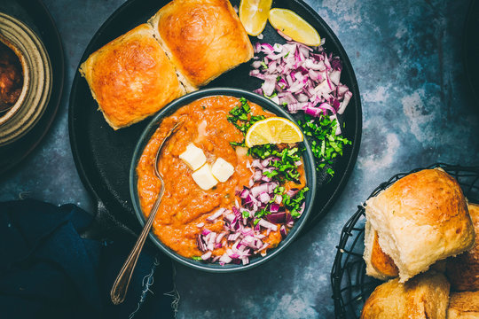

Ingredients:
- Vegetables
- Potatoes
- Cauliflower
- Carrots
- Peas
- Bell Peppers
- Aromatics
- Ginger-Garlic paste
- Onions
- Tomatoes
- Green Chillies
- Spices
- Pav-Bhaji Masala
- Turmeric Powder
- Red Chilli Powder
- Salt
- Other:
- Oil
- Butter
- Water
- Pav
- Lime Wedges
- Coriander

Pav bhaji is a popular Indian street food from Mumbai consisting of a spiced vegetable mash (bhaji) served with soft buttered bread rolls (pav), typically garnished with butter, onions, and lemon.
Steps:
- Prepare the Vegetables: Boil potatoes, cauliflower, carrots, and peas in water until soft and mashable. Drain and set aside.
- Heat Oil and Butter: In a large pan, heat oil and butter on medium heat.
- Sauté Aromatics: Add finely chopped onions and green chillies. Sauté until onions turn golden brown.
- Add Ginger-Garlic: Add ginger-garlic paste and cook for 1-2 minutes until the raw smell disappears.
- Cook Tomatoes: Add finely chopped tomatoes and cook until they become soft and mushy.
- Add Spices: Add turmeric powder, red chilli powder, pav bhaji masala, and salt. Mix well and cook for 2 minutes.
- Add Bell Peppers: Add finely chopped bell peppers and sauté for 2-3 minutes.
- Mash Vegetables: Add the boiled vegetables to the pan and mash them thoroughly using a potato masher.
- Add Water: Add water to adjust consistency. The bhaji should be thick but not too dry. Simmer for 5-7 minutes.
- Toast Pav: On a separate griddle, apply butter on pav and toast them until golden brown on both sides.
- Final Touch: Add a generous dollop of butter on top of the bhaji and garnish with chopped coriander.
- Serve: Serve hot bhaji with toasted pav, chopped onions, and lime wedges on the side.
Pro-tip: Use generous amount of butter to make it creamy and delicious.